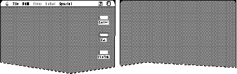
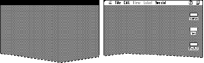

In the Dark Ages, an application could examine the graphics
environment once and gather all the information it needed to know.
After the System 7.1.2 Renaissance, the Display Manager made the
graphics environment dynamic, which provided many new features
(and introduced a few implementation issues). In Issue 24 of
develop, the Graphical Truffles column described some important
features of the Display Manager. Here we'll discuss some common
pitfalls that can cause an application to fail in a dynamic display
environment -- and ways you can overcome them.
If you use QuickDraw routines in an existing application, your application may already
support some aspects of the Display Manager without requiring any extra work on
your part. An example we touch on in this column is the graphics mirroring feature,
which allows users to make two graphics devices display the same image. QuickDraw,
whose routines have already been updated to support the Display Manager,
accomplishes graphics mirroring by overlapping the gdRects (global bounds) of the
graphics devices. QuickDraw's internal version of DeviceLoop behaves correctly by
detecting when devices overlap, then rendering the image properly for each device.
This allows overlapping devices to have different color tables or bit depths and still be
imaged correctly.
On this issue's CD, we've included a sample application, SuperFly, which illustrates
several techniques you can use to support a dynamic environment in your application.
Some of the sample code in this column is excerpted from SuperFly.
When we were integrating the Display Manager into new system software releases, we
encountered some common problems that existing applications had when running in a
dynamic display environment. Here's a list of suggestions regarding things that might
have worked in the past but won't work now; we'll examine each error in turn and
suggest a solution.
Don't forget to account for mirrored graphics devices when walking the
device list.When writing applications in the past, some programmers assumed that
graphics devices would never overlap. For example, you might assume that if a certain
rectangle is fully contained within a gdRect, it isn't on any other device. To implement
highlighting, your application might walk the device list and invert the selection if the
global rectangle of what you want to highlight intersects the gdRect of that device.
However, when there are two displays with the same gdRect in the device list, the first
inversion accomplishes the highlighting but the second inversion restores the
highlighted area to the original -- unhighlighted -- state.
Solution: Use DeviceLoop for your drawing. If you want to write your own version of
DeviceLoop for some reason, make sure that it handles overlapping displays. You could
solve the inverting problem by designing an algorithm to guarantee that each rectangle
in global space is highlighted only once. The MyHiliteRect routine in Listing 1 is an
example of a suitable algorithm.
The code in Listing 1 solves the highlighting problem by keeping track of the global
area that has been highlighted. When DMGetNextScreenDevice returns a mirrored
device (which will already have been highlighted by the first QuickDraw call), the
SectRgn will fail and that device will not be highlighted again.
Listing 1. Highlighting a global rectangle only once
OSErr MyHiliteRect(Rect* hiliteRect)
{
RgnHandle hiliteRgn, gdRectRgn, tempRgn;
GDHandle theGDevice;
hiliteRgn = NewRgn();
if (hiliteRgn == nil)
return (QDError());
gdRectRgn = NewRgn();
if (gdRectRgn == nil)
return (QDError());
tempRgn = NewRgn()
if (tempRgn == nil)
return (QDError());
// Make hiliteRect into a region.
RectRgn(hiliteRgn, hiliteRect);
// Get the first screen device from the Display Manager.
// Tell it to return only active screen devices so that we won't
// have to check here.
theGDevice = DMGetFirstScreenDevice(true);
// Loop until we run out of hiliteRgn or GDevices.
while ((theGDevice) && (!EmptyRgn(hiliteRgn)) {
// Does this device's rect intersect hiliteRgn?
RectRgn(&(**theGDevice).gdRect, gdRectRgn);
SectRgn(hiliteRgn, gdRectRgn, &tempRgn);
// If it does, highlight it.
if (!EmptyRgn(tempRgn)) {
// Highlight the area described by tempRgn.
...
// Take the area we just highlighted out of the region to
// highlight.
DiffRgn(hiliteRgn, tempRgn, hiliteRgn);
}
theGDevice = DMGetNextScreenDevice(theGDevice, true);
}
DisposeRgn(hiliteRgn);
DisposeRgn(gdRectRgn);
DisposeRgn(tempRgn);
}
Another solution is given in the sample code in the GDeviceUtilities.cp file on this
issue's CD. The function BuildAListOfUniqueDevices builds a list of all graphics devices
but eliminates mirrored devices. An application could cache this list and use it for
highlighting. However, the list could be invalidated if the user changes the device
configuration. The application should register with the Display Manager so that it will
be notified (through a notification callback or an Apple event) if the graphics world
has changed.
Don't assume that just because your application uses only one logical
display, it's drawing on only one physical device.Some applications assume
that they're using only one piece of graphics hardware when they're actually using
multiple physical devices. An example of this is a multimedia player that searches
through graphics devices and uses the first device it finds that meets its criteria for
bit depth or size. This technique causes a problem when the application uses Toolbox
calls specific to one physical graphics device, such as using SetEntries to animate the
color table. If mirroring is turned on, this changes the color table of only one device;
the second physical device still has the old color table.
Solution: If you use Toolbox calls specific to one physical graphics device, make sure
you do it for all devices that overlap your application's windows and not just the first
one you find. As shown in Listing 2, you could use DeviceLoop to accomplish this by
calling SetEntries in your DeviceLoop drawing procedure. Or you could use the Palette
Manager instead of SetEntries.
Listing 2. Calling SetEntries for overlapping devices
OSErr MySavvySetEntries(WindowRef aWindow, CTabHandle newColorTable)
{
RgnHandle tempWindowStructRgn;
DeviceLoopDrawingUPP setEntriesDeviceLoopRD;
OSErr theErr = noErr;
tempWindowStructRgn = NewRgn();
// Was there a problem making the region?
if ((theErr = QDError()) != noErr)
return (theErr);
GetWindowStructureRgn(aWindow, tempWindowStructRgn);
// We want to get called for every display that intersects our
// window.
setEntriesDeviceLoopRD =
NewDeviceLoopDrawingProc(SetEntriesDeviceLoop);
DeviceLoop(tempWindowStructRgn, setEntriesDeviceLoopRD,
(long) newColorTable, singleDevices);
DisposeRoutineDescriptor(setEntriesDeviceLoopRD);
DisposeRgn(tempWindowStructRgn);
return (theErr);
}
static pascal void SetEntriesDeviceLoop(short depth,
short deviceFlags, GDHandle targetDevice, long userData)
{
#pragma unused(depth, deviceFlags)
CTabHandle newColorTable = (CTabHandle) userData;
GDHandle savedCurrentGDevice;
// Since we'll be changing the current GDevice, we need to save
// and restore it.
savedCurrentGDevice = GetGDevice();
// SetEntries applies to the current GDevice, so make targetDevice
// the current GDevice.
SetGDevice(targetDevice);
// Insert the entire table into targetDevice. Do it in indexed
// mode.
SetEntries(-1, 255, &(**newColorTable).ctTable[0]);
// Restore the old current GDevice.
SetGDevice(savedCurrentGDevice);
}
Don't cache the graphics devices and their state on application
startup.With the Display Manager, many things about the graphics world can change,
such as the following:
If your application doesn't respond to these changes, it might present an inconsistent
interface to the user. For example, the MPW Shell used to cache the gdRect of the main
display and pass it to SizeWindow and MoveWindow. So if users changed the resolution
of a display, they couldn't grow or move windows beyond the previous size of the
display.
Solution: If the Display Manager is present, you should watch for Display Manager
notifications to detect changes in the graphics world. (See "Receiving and Responding to
Display Manager Events.") Specialized pieces of code, such as extensions or
components, can register a callback procedure with the Display Manager. To avoid
problems, you should use this method instead of patching to determine when the
display environment changes. (Display Manager 2.0 and later even notifies you when
the bit depth changes.) Better yet, don't cache device information at all unless your
code absolutely needs the extra ounce of performance.
______________________________
The Display Manager has been available since System 7 and is built into
system software version 7.1.2 and later. If the Display Manager isn't around,
the application can count on devices not moving around and changing sizes.
An application must set the isDisplayManagerAware flag in its 'SIZE' resource
to receive Display Manager events in its main event loop. If your application
sets this flag, it's responsible for moving its windows if the graphics world
changes, making sure that the windows all remain visible. If it doesn't set this
flag, the Display Manager will automatically move windows for your
application. Even if your application lets the Display Manager handle its
windows automatically, it can still register for Display Manager events by
using a callback procedure. The callback procedure is passed an Apple event
that the application has to parse.
The Graphical Truffles column in develop Issue 25 describes this in more
detail.
______________________________
The Display Manager passes all the information about the old and new display
configurations to the application when the world changes. The Apple event-handling
code on this issue's CD shows some ways to handle Display Manager events. For
instance, to detect whether any of the graphics devices have moved, we parse the Apple
event and compare the old and new gdRects:
AEGetNthDesc(&DisplayID, 1, typeWildCard, &tempWord, &OldConfig); AEGetKeyPtr(&OldConfig, keyDeviceRect, typeWildCard, (UInt32 *) &returnType, &oldRect, sizeof(Rect), nil); AEGetNthDesc(&DisplayID, 2, typeWildCard, &tempWord, &NewConfig); AEGetKeyPtr(&NewConfig, keyDeviceRect, typeWildCard, (UInt32 *) &returnType, &newRect, sizeof(Rect), nil); if (!EqualRect(&oldRect, &newRect)) HandleGDevicesMoved();
Don't assume that the menu bar will never move.This is especially a problem
with games or multimedia applications that would like to hide the menu bar. Most
applications hide the menu bar by adding the menu bar area to the gray region. (The
pointer to the gray region is stored in the GrayRgn global variable and can be retrieved
with the Window Manager function GetGrayRgn.) When the user moves the menu bar
from one display to another (using the Monitors or Monitors & Sound control panel),
the Display Manager reconstructs the gray region. If the application wants to show the
menu bar again, it removes the old menu bar area from the rebuilt gray region, but
this will not accurately reflect the available screen real estate. This top strip, where
the menu bar was, would be lost.
As shown in Figure 1, the menu bar was on the display on the left before the
application was launched. The application saved the menu bar location and added it to
the gray region so that it could draw there. As shown in Figure 2, when the application
quit, it subtracted the old menu bar area back out of the gray region. Since the menu
bar was moved, this part of the gray region is now lost. No desktop is drawn where the
menu bar used to be (the black rectangle).

Figure 1. Original location of menu bar

Figure 2. Gray region lost because menu bar movedSolution: Become Display
Manager-aware and get notified by the Display Manager when the menu bar moves.
Don't assume that menus will be drawn on only one display.In the past, it
was a safe assumption that the menu bar would be drawn on only one device at a time,
so anything that wanted to draw in the menu bar (such as an MDEF) needed to know
about only one display and a single bit depth. Since developers typically don't use
DeviceLoop to draw menus or draw in the menu bar, sometimes images are drawn
incorrectly when there are overlapped displays, especially on displays with different
bit depths. An example would be a menu that contains color, like the Label menu in the
Finder.
Solution: If you draw directly to the menu bar or to your menus and bypass
QuickDraw, use DeviceLoop. Note that drawing in the menu bar with standard
QuickDraw calls works fine in the mirrored case because QuickDraw takes care of the
overlapping case for you.
Don't draw directly to the screen and bypass QuickDraw without
checking for the mirrored case.Obviously, if an application draws directly to the
screen and mirroring is on, the other displays will not reflect any of the drawing.
Solution: Always allow the user to go back to a more "compatible" mode that uses
QuickDraw. If the application detects that mirroring is on (by calling
DMIsMirroringOn), consider falling back to CopyBits to get your data to the screen.
Don't assume that certain 680x0 registers will contain the same values
inside a DeviceLoop drawing procedure as when DeviceLoop was
called.We discovered this bug when we made DeviceLoop PowerPC-native for
mirroring performance. Some developers who write their DeviceLoop drawing
procedure in 680x0 assembly language rely on the fact that the value of A6 when the
drawing procedure was called is the same as when DeviceLoop was called. Application
developers relied on this to enable them to share stack frames between the caller of
DeviceLoop and the DeviceLoop drawing procedure. This will not work if a
PowerPC-only version of DeviceLoop is present, so it will not work under Mac OS 8. If
you write your DeviceLoop drawing procedure in a high-level language like C,
however, you don't have to worry about this problem.
Solution: If you want to share data with your DeviceLoop drawing procedure, use the
userData refCon supplied with DeviceLoop. If you need to rely on A6 remaining
constant, one solution would be to pass in the A6 of the DeviceLoop caller in the
userData parameter and set that to the A6 of the DeviceLoop drawing procedure. Be
sure to save and restore the original A6 of the DeviceLoop drawing procedure.
SUCCEEDING IN A CHANGING GRAPHICS WORLD
The Display Manager offers many new features that enable users to configure their
graphics devices dynamically. However, this dynamic display environment invalidates
certain assumptions that developers might have made when programming in a static
graphics environment. This column should start you thinking about these issues.
Although the Display Manager does attempt to preserve compatibility with existing
applications by moving windows around and preserving graphics device information, it
can't fix everything. Your application needs to be able to function in a changing
graphics world.
KENT "LIDBOY" MILLER, in a recent attempt to reshape the course of history, has
renounced the use of caffeine on a by-minute basis. Lidboy hails from the halls of
Apple, where he can be seen pacing in his fuzzy bear slippers. He considers the
pinnacle of western culture to have been achieved by the rock group known as Rancid,
although he occasionally reads from literary quarterlies on the sly. Were Lidboy to be
granted one wish, a side of rice from Taco Bell would no doubt be involved. The single
most used word in his vocabulary is "Salsa!"*
CAMERON ESFAHANI (cameron_esfahani@powertalk.apple.com, AppleLink DIRTY)
began his career in the spaghetti westerns of Sergio Leone. Industry analysts felt that
by going off into that area he would cut himself off from the mainstream and ruin his
career, but Cameron felt it was more important to follow his dreams. Now at Apple
Computer and looking back, he feels that his spaghetti western period was one of the
most exciting and rewarding of his life. He therefore dedicates this column to the
memory of Sergio Leone.*
Thanks to Tom Dowdy, Ian Hendry, Mike Marinkovich, and Mike Puckett for reviewing
this column.*